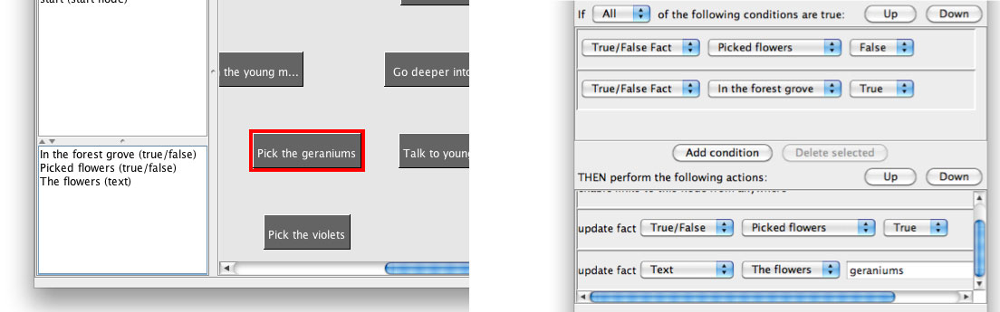

Facts
A fact represents some value which you can use later in the story. This is often called a variable in programming languages. There are three of facts types: text, true/false, and number facts.
You can add a fact to the story by using the New menu item under the Fact menu in the main window, and choosing your desired fact type. After choosing the fact time, you will see a dialogue box where you can name the fact. After the fact is created, it will appear in the fact list in the main window.
Facts may be selected by clicking on the fact in the fact list. The selected fact will be highlighted in the fact list. The selected fact may be renamed by using the Rename menu item in the Fact menu. The selected fact may be deleted by using the Delete menu item in the Fact menu.

All fact types can be set by using the Update fact action. Text facts and true/false facts can be set to values which you type in when you are writing the story. Number facts may be set to values you have typed in, but also to the value of other number facts, and to values calculated using simple mathematical expressions. Text facts which have not been set will be set to blank text. True/false facts which have not been set will be false. Number facts which have not been set will have the value 0.
True/false and number facts can be tested in conditions. A true/false fact may be tested for whether it is true or false. Number facts may be tested for whether they are equal to either a value you have typed in when writing the story, or another number fact.